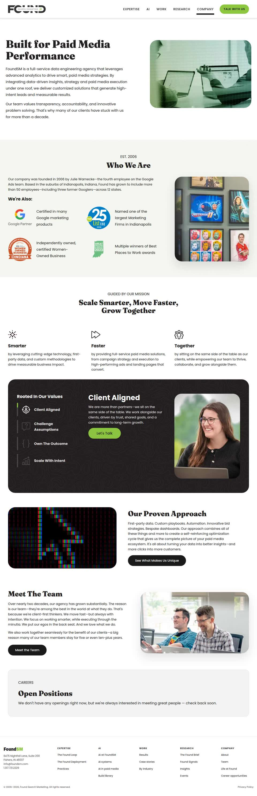
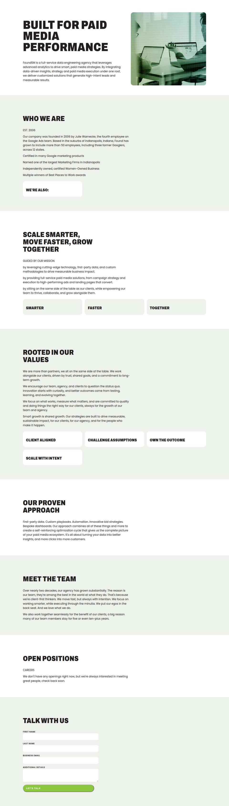
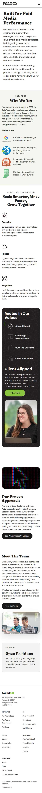
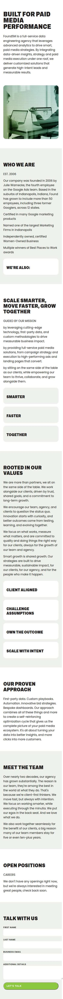

Company · medium




kept, reworded (em dash replaced with a comma)
Before: Our company was founded in 2006 by Julie Warnecke—the fourth employee on the Google Ads team. Based in the suburbs of Indianapolis, Indiana, Found has grown to include more than 50 employees—including three former Googlers—across 12 states.
After: Our company was founded in 2006 by Julie Warnecke, the fourth employee on the Google Ads team. Based in the suburbs of Indianapolis, Indiana, Found has grown to include more than 50 employees, including three former Googlers, across 12 states.
kept, reworded (em dash replaced with a comma)
Before: We are more than partners—we sit on the same side of the table. We work alongside our clients, driven by trust, shared goals, and a commitment to long-term growth.
After: We are more than partners, we sit on the same side of the table. We work alongside our clients, driven by trust, shared goals, and a commitment to long-term growth.
kept, reworded (em dash replaced with a comma)
Before: We encourage our team, agency, and clients to question the status quo. Innovation starts with curiosity—and better outcomes come from testing, learning, and evolving together.
After: We encourage our team, agency, and clients to question the status quo. Innovation starts with curiosity, and better outcomes come from testing, learning, and evolving together.
kept, reworded (em dash replaced with a comma)
Before: We focus on what works, measure what matters, and are committed to quality and doing things the right way for our clients—always for the growth of our team and agency.
After: We focus on what works, measure what matters, and are committed to quality and doing things the right way for our clients, always for the growth of our team and agency.
kept, reworded (em dash replaced with a comma)
Before: Smart growth is shared growth. Our strategies are built to drive measurable, sustainable impact—for our clients, for our agency, and for the people who make it happen.
After: Smart growth is shared growth. Our strategies are built to drive measurable, sustainable impact, for our clients, for our agency, and for the people who make it happen.
kept, reworded (em dash replaced with a comma)
Before: First-party data. Custom playbooks. Automation. Innovative bid strategies. Bespoke dashboards. Our approach combines all of these things and more to create a self-reinforcing optimization cycle that gives us the complete picture of your paid media ecosystem. It's all about turning your data into better insights—and more clicks into more customers.
After: First-party data. Custom playbooks. Automation. Innovative bid strategies. Bespoke dashboards. Our approach combines all of these things and more to create a self-reinforcing optimization cycle that gives us the complete picture of your paid media ecosystem. It's all about turning your data into better insights, and more clicks into more customers.
kept, reworded (em dash replaced with a comma)
Before: Over nearly two decades, our agency has grown substantially. The reason is our team—they're among the best in the world at what they do. That's because we're client-first thinkers. We move fast—but always with intention. We focus on working smarter, while executing through the minutia. We put our egos in the back seat. And we love what we do.
After: Over nearly two decades, our agency has grown substantially. The reason is our team, they're among the best in the world at what they do. That's because we're client-first thinkers. We move fast, but always with intention. We focus on working smarter, while executing through the minutia. We put our egos in the back seat. And we love what we do.
kept, reworded (em dash replaced with a comma)
Before: We also work together seamlessly for the benefit of our clients—a big reason many of our team members stay for five or even ten-plus years.
After: We also work together seamlessly for the benefit of our clients, a big reason many of our team members stay for five or even ten-plus years.
kept, reworded (em dash replaced with a comma)
Before: We don't have any openings right now, but we're always interested in meeting great people — check back soon.
After: We don't have any openings right now, but we're always interested in meeting great people, check back soon.
69 of 69 items kept. Reworded items are still on the page. Open the list to see each one.